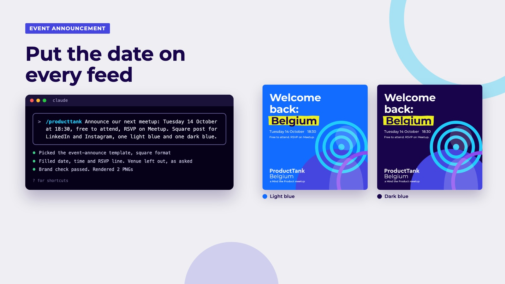
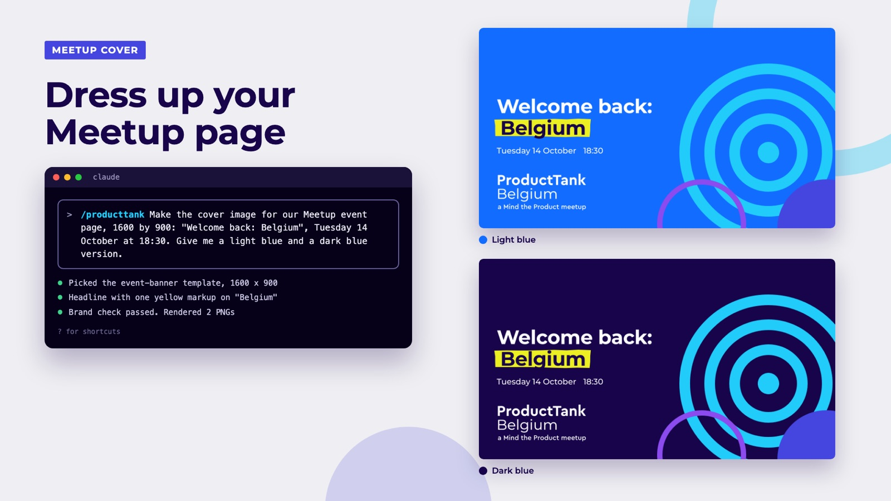
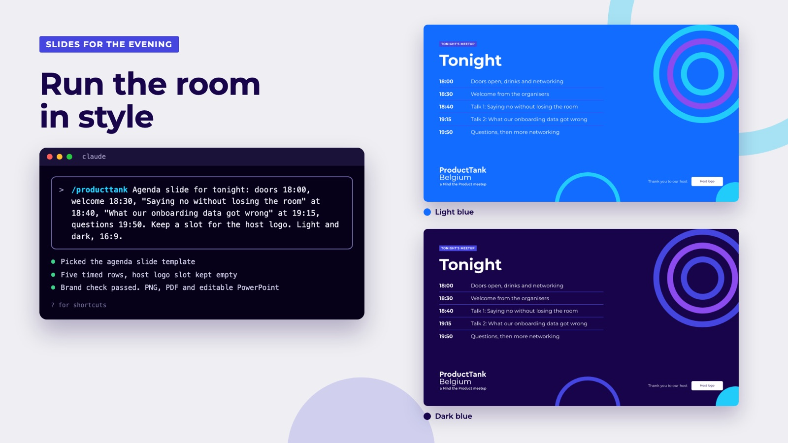
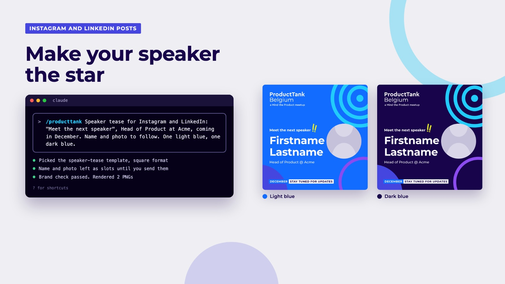
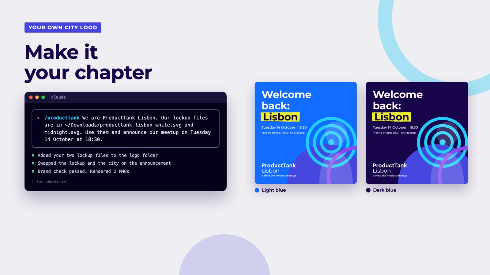
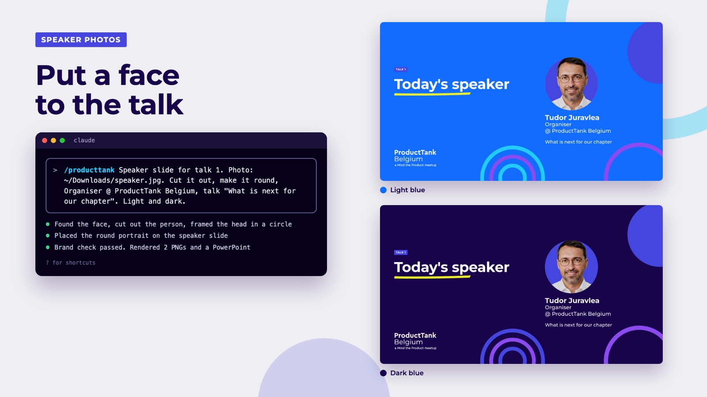
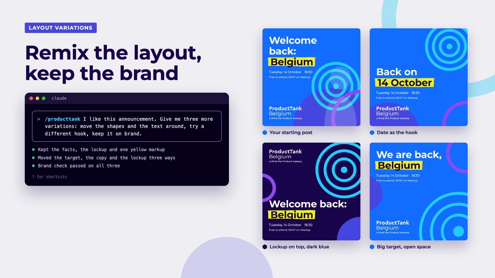

Two ways in, pick one
Most organisers only need the first one. The second is for when you want finished PNG, PDF and PowerPoint files straight out of the tool.
The hosted server
For everyone. Nothing to install.
- Add one address to Claude or ChatGPT as a connector
- Say your chapter name, then ask for what you need
- Get on-brand copy, HTML drafts and a brand check
The full skill
For organisers who use Claude Code on a Mac or Linux.
- Clone the GitHub repo, run five commands
- Type
/producttankand give the facts - Get checked PNGs, print PDFs and editable PowerPoint
Start with the hosted server
Copy the server address
https://mcp.product.brussels/mcp
Want to check it is up? Open mcp.product.brussels/healthz and look for
"ok":true.Add it to your assistant
- On the web or desktop app (paid plan), open Settings, then Connectors.
- Click Add custom connector.
- Name it
ProductTankand paste the address. Leave the other fields empty. - In a new chat, open the tools menu and switch ProductTank on.
- Paid plan needed. On Business or Enterprise, an admin must allow custom connectors first.
- Open Settings, Connectors, Advanced, and turn on Developer mode.
- Back in Connectors, click Create. Name
ProductTank, paste the address, authentication No authentication. - In a new chat, open the plus menu, choose Developer mode and tick ProductTank.
One command in your terminal:
claude mcp add --transport http producttank https://mcp.product.brussels/mcp
One command in your terminal:
gemini mcp add --transport http producttank https://mcp.product.brussels/mcp
The Gemini web and phone apps cannot add their own servers yet. Use the CLI.
Say your chapter first
The server asks for it on every call, so your posts carry your city's name and lockup. Start with something like “I organise ProductTank Lisbon.” If Mind the Product has not sent an official lockup for your chapter yet, the server builds one from the official wordmark and marks it as derived.
Ask for what you need, with the facts you have
Give the date, time, place and speakers you know. Anything you leave out stays an empty slot. It will not make up a venue or a name to fill the space.
Let it check its own work
Ask it to run the result through
lint_html. The checker flags off-brand colours, the wrong font, a missing lockup, “PMs” instead of product people, a date without the month spelled out, and more.
Prompts to copy
Change the city and the factsI organise ProductTank Lisbon. Read the brand rules from the ProductTank server and tell me the colours, the font and the rules for the logo.
ProductTank Manchester. Write a LinkedIn teaser for our meetup on Tuesday 14 October. One speaker is confirmed: <name>, <role> at <company>. The second is not confirmed yet. Use the voice guide from the server.
ProductTank Berlin. Get the speaker tease template from the server and fill it: name <name>, Head of Product at <company>, Tuesday 3 November. Leave the talk title empty. Check it with lint_html and fix every error.
ProductTank Belgium. Make an agenda slide: doors 18:00, talk one 18:35, break 19:20, talk two 19:35, networking until 21:00. Start from the agenda slide template and check it before you show it to me.
ProductTank San Francisco. Write the Meetup event page for a panel on pricing. Three panellists, names to follow. Doors at 18:00, free, registration on Meetup. Follow the playbook on the server.
ProductTank Lisbon. Here is the HTML of a post a volunteer made. Check it with lint_html and list what breaks the brand.
One prompt, two looks
Every example below came from one prompt like the one on the left. Each comes in light blue and dark blue, checked against the brand before you see it.







Also made with it in Belgium
House rules it keeps for you
The lockup stays put
White or Midnight, top or bottom left, never recoloured, retyped or stretched.
One yellow markup
One highlighted word per canvas, the key word of the message.
Brand grounds only
Bold Cyan, Black, Midnight or the gradient. Yellow is for markup, never a background.
Product people
Never “PMs”. Mind the Product and ProductTank spelled exactly.
Dates people can read
“Tuesday 14 October, 18:30”. Month spelled out, 24-hour time.
No invented facts
A missing date, venue, speaker or number stays an empty slot until you give it.
Questions
Does it cost anything?
No. The server is free and open with no login. You only need a paid plan of the assistant you already use, because custom connectors are a paid feature in Claude and ChatGPT.
What does the server see of my work?
It is read only. Your assistant reads the brand rules and templates from it. The only work of yours it receives is HTML you ask it to check.
Can it make the final image for me?
The hosted server gives your assistant everything it needs to write the post as HTML. For finished PNG, PDF and PowerPoint files with all the checks, use the full skill with Claude Code. The install guide is in the GitHub README.
My chapter is not Belgium. Whose logo will I get?
Yours. Say your chapter and the templates come back with your city's name. If there is no official lockup file for your chapter, it is drawn from the official wordmark and marked as derived. Ask your regional coordinator at Mind the Product for the official files.
Something looks off, or I want a new template
Open an issue on GitHub or reply in this thread. Templates other chapters have made are welcome too.
Who made this
Tudor Juravlea
Service experience design lead and product consultant, co-organiser of ProductTank Belgium
I help teams design services people actually want to use, from research and workshops to the screens and journeys that ship. Before moving to Brussels I ran the Design Thinking Society, a consultancy that worked with more than 40 companies in banking, telecoms and retail, and I taught UX to career switchers.
I built this kit so organisers spend less time fighting templates and more time with their community. If it helps your chapter, I would love to hear about it.